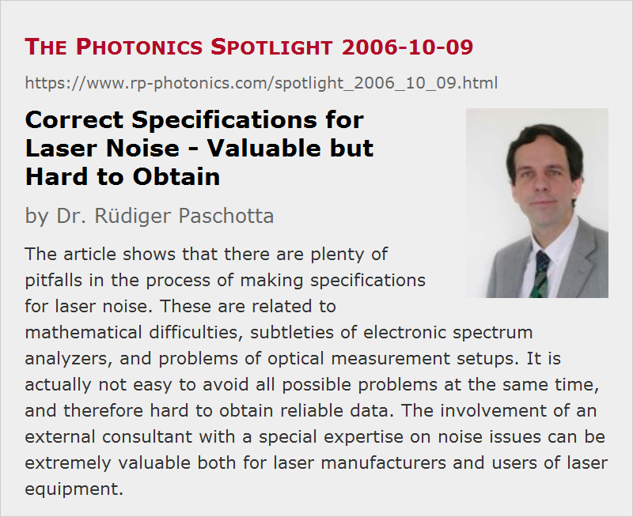

Correct Specifications for Laser Noise - Valuable but Hard to Obtain
Posted on 2006-10-09 as a part of the Photonics Spotlight (available as e-mail newsletter!)
Permanent link: https://www.rp-photonics.com/spotlight_2006_10_09.html
Author: Dr. Rüdiger Paschotta, RP Photonics Consulting GmbH
Abstract: The article shows that there are plenty of pitfalls in the process of making specifications for laser noise. These are related to mathematical difficulties, subtleties of electronic spectrum analyzers, and problems of optical measurement setups. It is actually not easy to avoid all possible problems at the same time, and therefore hard to obtain reliable data. The involvement of an external consultant with a special expertise on noise issues can be extremely valuable both for laser manufacturers and users of laser equipment.

Ref.: encyclopedia articles on laser noise, noise specifications, relative intensity noise, phase noise, etc.
Laser noise is a very important issue for many laser applications, and a low noise level of a laser product can be an important selling point. However, noise specifications are very often wrong. While wrong numbers, caused e.g. by various common errors in the interpretation of results from electronic spectrum analyzers, can only be detected by compared with correct measurements or by checking the measurement setup in detail, the type of frequently given noise specifications already reveals to the expert that certain issues have not been understood.
The probably most common example is that of intensity noise specified as something like “±1%”. First of all, it is then not clear what the apparent limits mean: will the intensity never deviate from the average value by more than 1%? Or only rarely? How rarely? Second, the measurement bandwidth and time are not indicated. Obviously, a faster detector will see stronger fluctuations than one which averages the detected laser power over a longer time interval. Also, the longer the measurement time, the more will slow drifts of the laser power affect the result. Therefore, a specification of the mentioned type will reveal more about the competence of the source than about the laser product.
Linewidth values are also prone to many errors. A particularly crude (but not rare) pitfall is the measurement with a self-heterodyne setup where the delay is significantly too short. One may then totally underestimate the linewidth. Unfortunately, it is not entirely easy to determine what the required delay length is. There is a simple and thus commonly used rule that the delay length should be at least several times the coherence length, and the latter is simply related to the measured linewidth. However, this rule is based on the assumption of white frequency noise, while the noise spectrum of many real lasers (particularly of fiber lasers) often substantially deviates from that assumption in such a way that the application of the mentioned simple rule can lead to quite wrong results.
Another mine field is the use of electronic spectrum analyzers for noise measurements. Modern spectrum analyzers are very sophisticated devices, strongly processing the recorded signals and displaying results e.g. in units of watts per hertz. While it is relatively easy to convert them e.g. to numbers for the relative intensity noise of a laser, significant errors can occur when certain corrections are not applied, or when inappropriate device settings are used. Just one example is that the effective noise bandwidth of a filter is typically not the same as the displayed measurement bandwidth, but there is a number of other pitfalls. Most of them can be understood only with a decent knowledge of the inner workings of spectrum analyzers, and of certain mathematical details in addition. To avoid some misunderstanding: the use of electronic spectrum analyzers for noise measurements can be very reasonable, but it can lead to reliable results only when the task is carried out by a specially trained person – and there are few of those at work in industry as well as in scientific research.
For such reasons, it may not be exaggerated to assume that the majority of laser noise specifications on product data sheets are incorrect at least in one respect, but are not recognized as such by many because of a widespread lack of know-how. What consequences should be taken? Laser manufacturers should make sure that at least some part of their technical staff is carefully trained to well understand the physics and electronics in the context of noise. If this is achieved, they can win and preserve the trust of those users who care. Also, they then have a chance to further improve the noise performance of their products. The perspective of laser users is different: they can only be advised not to trust any noise specifications without having checked that these have been made by sufficiently competent personnel. This is particularly true in cases where the application is limited by noise issues.
Both manufacturers and users may wonder how to acquire the necessary know-how when it is not in house already – or even how to check whether the available know-how is sufficiently reliable and complete. This situation is a typical example for such cases where the involvement of an external technical consultant (in that case with a special expertise on noise issues) can be extremely valuable. For example, a custom-tailored staff training course can fix many problems within a short time.
This article is a posting of the Photonics Spotlight, authored by Dr. Rüdiger Paschotta. You may link to this page and cite it, because its location is permanent. See also the RP Photonics Encyclopedia.
Note that you can also receive the articles in the form of a newsletter or with an RSS feed.
Questions and Comments from Users
Here you can submit questions and comments. As far as they get accepted by the author, they will appear above this paragraph together with the author’s answer. The author will decide on acceptance based on certain criteria. Essentially, the issue must be of sufficiently broad interest.
Please do not enter personal data here; we would otherwise delete it soon. (See also our privacy declaration.) If you wish to receive personal feedback or consultancy from the author, please contact him e.g. via e-mail.
By submitting the information, you give your consent to the potential publication of your inputs on our website according to our rules. (If you later retract your consent, we will delete those inputs.) As your inputs are first reviewed by the author, they may be published with some delay.
|  |
If you like this page, please share the link with your friends and colleagues, e.g. via social media:
These sharing buttons are implemented in a privacy-friendly way!